Clause de non-responsabilité
Veuillez lire attentivement ce manuel avant d'utiliser la Makera Z1（Z1&Z1Pro）. Le non-respect de cette consigne peut entraîner des blessures, des résultats médiocres ou des dommages à la machine Makera Z1（Z1&Z1Pro）.
Ce manuel est fourni à titre indicatif uniquement. Nous nous réservons le droit de le modifier ou de le réviser; les utilisateurs peuvent télécharger la version la plus récente sur notre site web.
Surveillez toujours les machines lorsqu'elles sont en fonctionnement. Les fraises tournant à grande vitesse, les composants instables ou le module laser en fonctionnement sont dangereux pour les personnes non protégées. Lisez attentivement les consignes de sécurité ci-dessous afin d'éviter tout dommage inutile.
Consignes de sécurité
1. Portez toujours des lunettes de sécurité lorsque vous utilisez la machine, en particulier lorsque le capot de protection est ouvert.
2. Portez toujours des lunettes de protection laser lorsque vous utilisez le module laser.
3. Portez une protection auditive lorsque la Makera Z1（Z1&Z1Pro） usine des matériaux durs.
4. Ne laissez pas la machine sans surveillance pendant l'usinage.
5. Faites attention au tranchant des fraises lors de leur installation, de la collecte des poussières et des autres opérations.
6. Le fraisage produit de la chaleur. Des paramètres inadaptés peuvent provoquer un incendie. Veillez à disposer d'un extincteur à proximité.
7. Certains matériaux sont dangereux pour les personnes lors de l'usinage, comme la fibre de carbone. Portez un masque et raccordez un aspirateur pour collecter les poussières.
8. N'exposez pas cette machine à la pluie ni à l'humidité.
9. Les enfants ne sont pas autorisés à utiliser ce produit. Seul un personnel qualifié est autorisé à l'utiliser.
En cas d'urgence pendant l'usinage, par exemple si la pièce se desserre, si des composants sont endommagés ou si une lumière ou un son inhabituel provient de la machine, appuyez sur le bouton principal ou le bouton E-Stop. Toutes les opérations en cours s'arrêteront immédiatement; vous pouvez aussi couper l'alimentation pour éteindre la machine.
La Makera Z1（Z1&Z1Pro） dispose d'une option de sécurité qui permet à la machine d'arrêter automatiquement son fonctionnement lorsque le capot est ouvert. Cette fonction est utile dans les écoles ou les environnements de travail où des enfants pourraient atteindre la machine.
Sécurité des CNC de bureau
- En cas d'urgence pendant l'usinage, par exemple si la pièce se desserre, si des composants sont endommagés ou si une lumière ou un son inhabituel provient de la machine, appuyez sur le bouton principal ou le bouton E-Stop. Toutes les opérations en cours s'arrêteront immédiatement; vous pouvez aussi couper l'alimentation pour éteindre la machine.
- La Makera Z1 et la Makera Z1 Pro disposent d'une option de sécurité qui permet à la machine d'arrêter automatiquement son fonctionnement lorsque le capot est ouvert. Cette fonction est utile dans les écoles ou les environnements de travail où des enfants pourraient atteindre la machine.
- L'utilisation de matériaux non fournis ou non spécifiés pour les équipements CNC de bureau Makera peut nécessiter des mesures de protection et de sécurité supplémentaires. Consultez toujours la fiche de données de sécurité (SDS) fournie par le fabricant du matériau pour connaître les consignes de sécurité détaillées avant utilisation.
Conformité
Conformité FCC
Cet équipement a été testé et déclaré conforme aux limites applicables aux appareils numériques de classe B, conformément à la partie 15 des règles de la FCC. Ces limites sont conçues pour fournir une protection raisonnable contre les interférences nuisibles dans une installation résidentielle. Cet équipement génère, utilise et peut émettre de l'énergie radiofréquence et, s'il n'est pas installé et utilisé conformément aux instructions, peut provoquer des interférences nuisibles aux communications radio. Toutefois, aucune garantie ne peut être donnée qu'aucune interférence ne se produira dans une installation particulière. Si cet équipement provoque des interférences nuisibles à la réception radio ou télévisuelle, ce qui peut être déterminé en éteignant puis en rallumant l'équipement, l'utilisateur est invité à essayer de corriger ces interférences par une ou plusieurs des mesures suivantes :
- Réorienter ou déplacer l'antenne de réception.
- Augmenter la distance entre l'équipement et le récepteur.
- Brancher l'équipement sur une prise d'un circuit différent de celui auquel le récepteur est connecté.
- Demander conseil au revendeur ou à un technicien radio/télévision expérimenté.
Attention : tout changement ou toute modification de cet appareil qui n'est pas explicitement approuvé par le fabricant peut annuler votre autorisation de l'utiliser.
Cet appareil est conforme à la partie 15 des règles de la FCC. Son fonctionnement est soumis aux deux conditions suivantes :
(1) Cet appareil ne doit pas provoquer d'interférences nuisibles et (2) il doit accepter toute interférence reçue, y compris celles susceptibles de provoquer un fonctionnement indésirable.
Cet équipement respecte les limites d'exposition aux rayonnements de la FCC établies pour un environnement non contrôlé. Il doit être installé et utilisé à une distance minimale de 20cm entre le radiateur et votre corps.
Conformité ISEDC
Cet appareil est conforme aux normes RSS exemptes de licence d'Innovation, Sciences et Développement économique Canada. Son fonctionnement est soumis aux deux conditions suivantes :
(1) Cet appareil ne doit pas provoquer d'interférences nuisibles et (2) il doit accepter toute interférence reçue, y compris celles susceptibles de provoquer un fonctionnement indésirable de l'appareil.
Le présent appareil est conforme aux CNR d'Innovation, Sciences et Développement économique Canada applicables aux appareils radio exempts de licence. L'exploitation est autorisée aux deux conditions suivantes : (1) l'appareil ne doit pas produire de brouillage et (2) l'utilisateur de l'appareil doit accepter tout brouillage radioélectrique subi, même si le brouillage est susceptible d'en compromettre le fonctionnement.
Cet appareil est conforme aux directives d'exposition aux radiofréquences; les utilisateurs peuvent obtenir les informations canadiennes relatives à l'exposition et à la conformité RF. La distance minimale entre le corps et l'appareil est de 20cm.
Le présent appareil est conforme. Après examen de ce matériel au regard des limites de conformité ou d'intensité de champ RF, les utilisateurs peuvent obtenir les informations correspondantes sur l'exposition aux radiofréquences et la conformité. La distance minimale entre le corps et l'appareil est de 20cm.
Étiquettes de sécurité
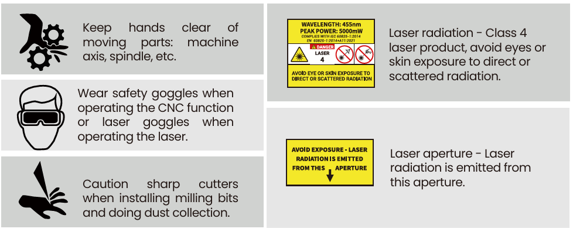
Déballage
Le poids de la caisse dépasse 30Kg/ 60lb. Le poids net de la fraiseuse de bureau Makera Z1（Z1&Z1Pro） est d'environ 20Kg/40lb. Nous recommandons de déplacer cette machine à au moins deux personnes (avec des gants) afin d'assurer la sécurité des personnes et de la machine. Vérifiez que votre bureau est suffisamment robuste et dispose d'un espace d'au moins 60 x 60 cm pour accueillir cette machine.
https://youtu.be/lad2MBLVIDE
Déballage
Après avoir ouvert l'emballage, retirez les matériaux de protection situés en haut et sur les côtés. Avec de l'aide, soulevez soigneusement la machine par les poignées inférieures et placez-la sur une surface stable et plane.
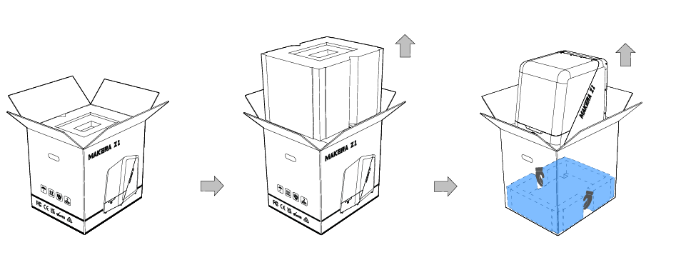
Suivez l'illustration pour ouvrir le capot de la machine et retirer la mousse de protection et les accessoires intérieurs.
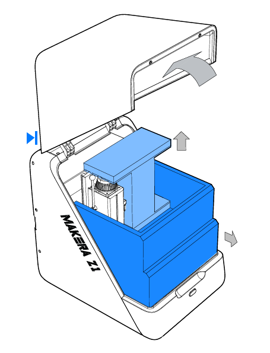
Note:
1. En raison du mécanisme d'amortissement, le capot doit être ouvert presque à la verticale pour rester en place. Ne forcez pas au-delà de cet angle, car cela pourrait l'endommager.
2. Conservez les matériaux d'emballage pour une utilisation ultérieure. Gardez les sacs en plastique hors de portée des enfants afin d'éviter tout risque d'étouffement.
Présentation de la machine
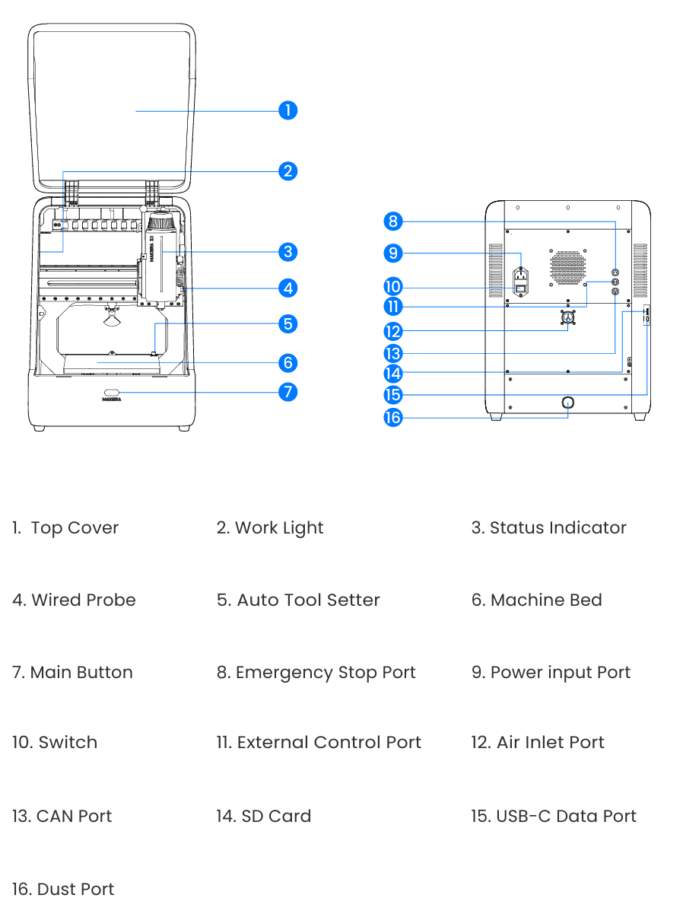
Contenu de la boîte
Accessoires et matériaux
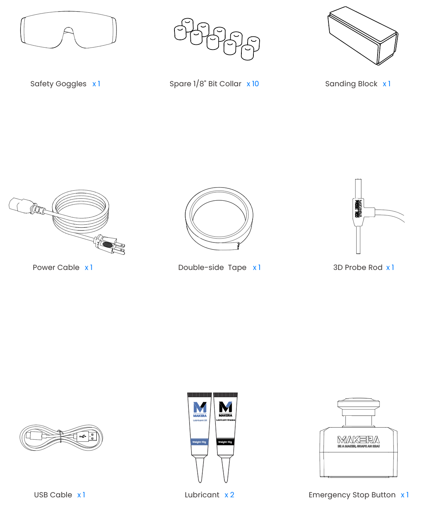
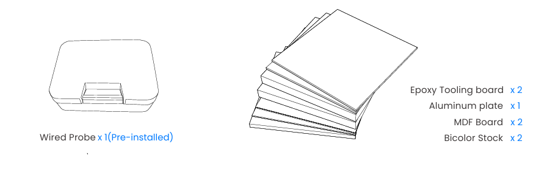
Informations sur les dimensions des matériaux
Plateau d'usinage en époxy : 100mm*100mm*10mm
Plaque d'aluminium : 100mm*100mm*5mm
Plaque MDF : 100mm*100mm*2mm
Brut bicolore : 100mm*100mm*1.3mm
Remarque :
- En raison de certaines tolérances de découpe des matériaux, utilisez un pied à coulisse (ou un autre instrument de mesure) pour vérifier les dimensions avant l'usinage.
- L'usinage CNC est un procédé de fabrication soustractif. Nous vous recommandons de prendre l'habitude de vérifier les dimensions du matériau avant l'usinage, ce qui contribuera à améliorer vos résultats.
Kits d’outils
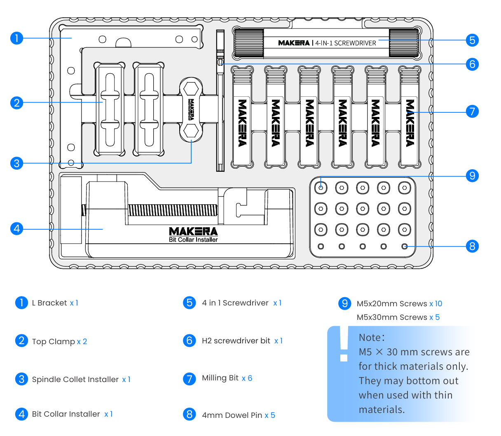
Opérations et outils de base
Changement d’outil
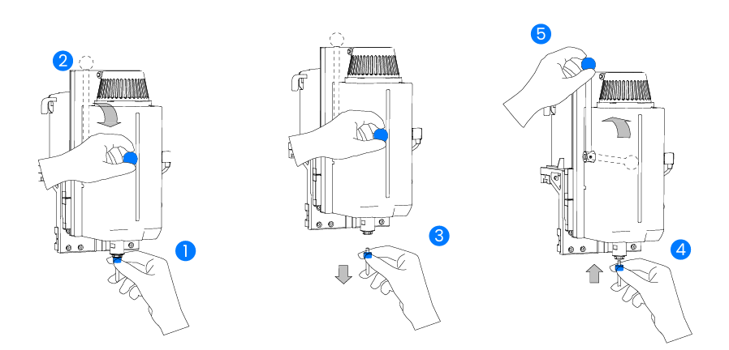
Le changement rapide d'outil est une fonctionnalité essentielle de la Makera Z1 (Z1 & Z1Pro). Il permet de remplacer les outils en quelques secondes seulement et d'améliorer considérablement l'efficacité du travail.
Étapes d'utilisation
1. Tenez de la main droite la pince de l'outil juste sous la pince de broche. (Nous recommandons d'utiliser des outils munis d'une pince afin de positionner la longueur de la queue et de réduire le risque de blessure aux doigts.)
2. Appuyez sur le levier de la main gauche pour libérer l'outil.
3. Retirez délicatement l'outil de la main droite.
Note:
Ne tirez pas dessus avec force afin d'éviter de vous blesser les doigts.
4. Insérez le nouvel outil dans la pince de broche.
5. Relâchez le levier de la main gauche pour le laisser revenir automatiquement, puis retirez votre main droite.
Note:
1. Une tige de protection de 3.175 mm est installée dans la pince en usine. Remplacez-la par un véritable outil avant utilisation.
2. Les outils CNC sont tranchants. Manipulez-les avec précaution afin d'éviter les blessures.
Maintien et positionnement de la pièce
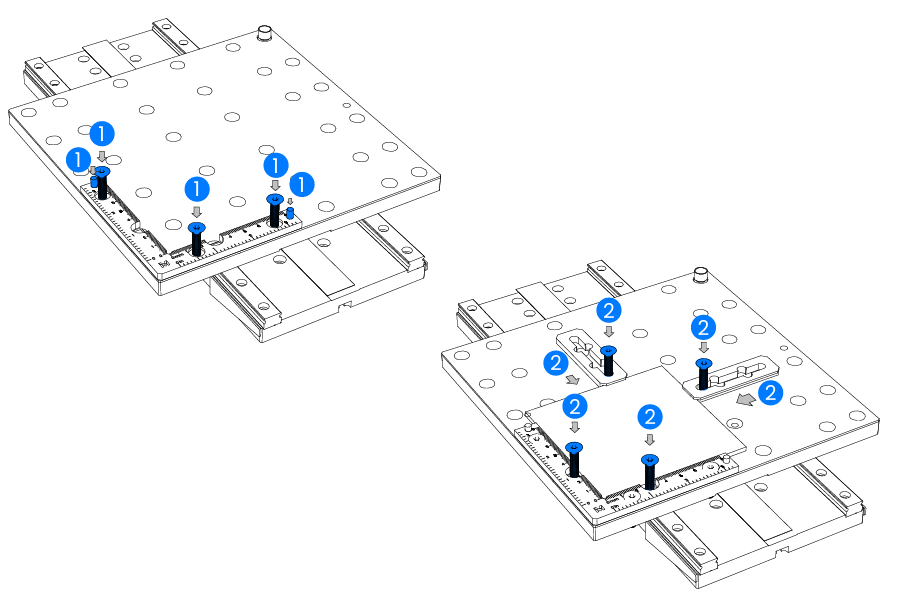
La Makera Z1 (Z1 & Z1Pro) simplifie le bridage des pièces et le positionnement XYZ grâce à son système de points d'ancrage et à son palpage automatique de l'axe Z. Il suffit de placer et de fixer la pièce au point d'ancrage indiqué; le système détecte automatiquement le coin inférieur gauche comme origine d'usinage (point zéro couramment utilisé).
Étapes d'utilisation
1. Installer l'équerre en L
Fixez l'équerre en L au point d'ancrage avec deux goupilles de positionnement de 4 mm et trois vis M5×20 (utilisez des vis plus longues pour l'équerre épaisse).
Placez la pièce contre la face intérieure de l'équerre pour le positionnement initial.
2. Fixer la pièce
Insérez deux vis M5 dans les ouvertures semi-circulaires de l'équerre pour fixer le coin inférieur gauche.
Utilisez les brides supérieures pour fixer le coin supérieur droit et terminer l'installation.
Note:
1. Ne serrez pas excessivement les brides supérieures afin d'éviter d'endommager les brides ou la pièce.
2. Utilisez des vis de longueur adaptée à l'épaisseur de la pièce afin d'éviter de rayer la plaque de base.
Collecte des poussières
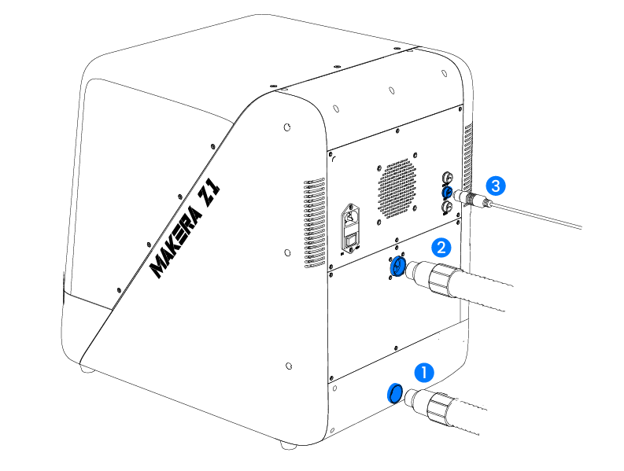
La Makera Z1 (Z1 & Z1Pro) dispose d'un système innovant de collecte des poussières. Le ventilateur de la broche dirige les copeaux sous la surface de travail, où le flux d'air externe et les vibrations de la machine les entraînent vers le bac à poussières inférieur. Un collecteur de poussières externe évacue ensuite les débris et maintient l'espace de travail propre.
Étapes d'utilisation :
1. Raccorder l’entrée du collecteur de poussières externe au port Dust arrière inférieur (Ø22 mm).
2. Raccorder la sortie du collecteur de poussières au port Air Inlet arrière supérieur (Ø22 mm).
3. (Si disponible) Raccorder le câble de commande au port de commande externe arrière.
4. Activer le soufflage d’air automatique et la collecte des poussières dans le logiciel de commande pendant l’utilisation.
Note:
Pour de meilleures performances, utilisez un collecteur de poussières avec assistance pneumatique externe (par exemple le Makera Cyclone Dust Collector Lite). Consultez le manuel du collecteur pour les instructions détaillées.
Changement de pince de broche
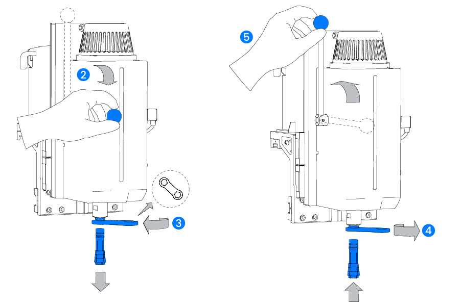
Makera Z1 (Z1 et Z1Pro) est équipée d’une pince de broche standard 1/8" (3.175 mm), compatible avec la plupart des outils couramment utilisés sur les CNC de bureau. Pour utiliser des outils dont le diamètre de queue est différent, remplacez la pince par la taille appropriée.
Étapes d'utilisation :
1. Consultez la section Changement d’outil et retirez l’outil actuel.
2. Abaissez le levier de changement d’outil pour verrouiller la broche (et empêcher sa rotation).
3. Utilisez l’installateur de pince de broche de la boîte à outils pour retirer la pince existante.
4. Installez la nouvelle pince et vérifiez qu’elle est correctement engagée.
5. Relâchez le levier de la main gauche pour le laisser revenir automatiquement, puis retirez votre main droite.
Note:
1. Après le remplacement, vérifiez que la queue de l’outil correspond à la taille de la pince.
2. Lorsque vous utilisez des accessoires comme le palpeur filaire, la tige de palpage 3D ou le palpeur 3D, remplacez également la queue par la taille correspondante.
Sonde filaire
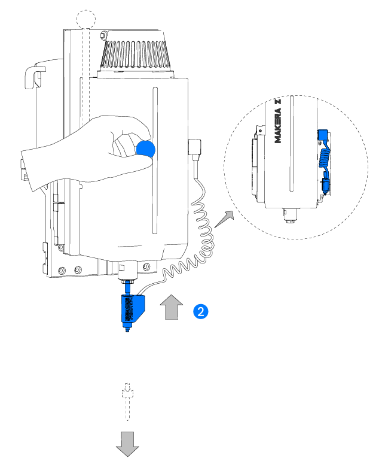
Le palpeur filaire prend en charge le palpage automatique de l’axe Z, la mise à niveau de surface et le balayage de la zone d’usinage. Utilisé avec le système à repères de Makera Z1 (Z1 et Z1Pro), il facilite le positionnement XYZ et simplifie le flux de travail CNC.
Étapes d’utilisation :
1. Suivez l’instruction du logiciel de commande pour passer au palpeur.
2. Consultez la section Changement d’outil pour retirer l’outil actuel et installer le palpeur filaire.
3. Cliquez sur Continuer ou appuyez sur le bouton principal pour démarrer l’étalonnage du palpeur ; le système termine automatiquement les étapes restantes.
Note:
Double-cliquez sur le palpeur pour activer l’indication laser et vérifier sa position actuelle。
Tournevis 4-en-1
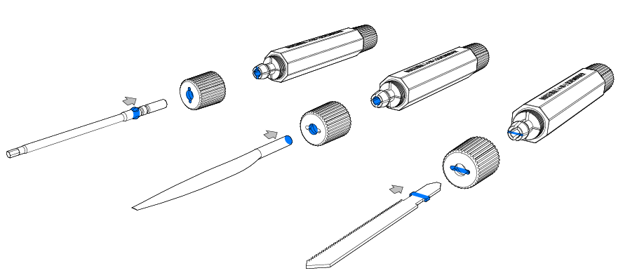
Le tournevis 4-en-1 Makera regroupe plusieurs fonctions — tournevis, scie à main et lime à main — dans un outil compact. Avec un seul outil, vous pouvez passer rapidement du serrage au retrait et à la finition, ce qui en fait un accessoire essentiel de votre flux de travail CNC.
L’écrou de pince possède une fente de dégagement qui permet de changer rapidement d’outil sans retirer complètement l’écrou.
Pour l’embout de lime, desserrez simplement l’écrou, insérez l’outil et resserrez. Pour les embouts de tournevis et de scie, desserrez l’écrou, alignez-les avec la fente large ou étroite de la pince, insérez-les et serrez fermement.
Note:
Vérifiez toujours que l’outil est solidement fixé avant utilisation afin d’éviter qu’il ne se détache pendant le fonctionnement.
Bouton d'arrêt d'urgence
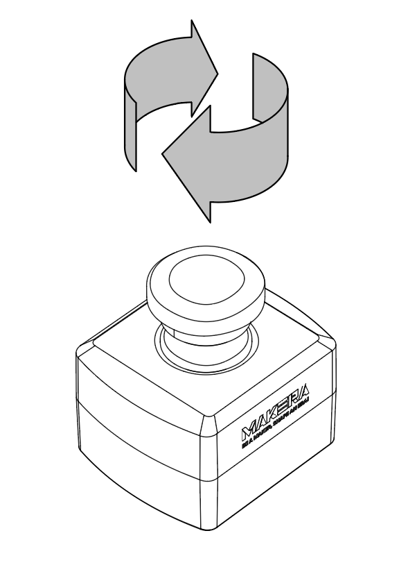
Raccorder le câble du bouton d’arrêt d’urgence au port d’arrêt d’urgence à l’arrière de la machine.
En cas d’urgence (bris ou blocage de l’outil, desserrage de la pièce, etc.), appuyez sur le bouton d’arrêt d’urgence pour arrêter immédiatement la machine.
L’arrêt d’urgence est un interrupteur à verrouillage. Avant la mise sous tension, tournez-le dans le sens horaire pour le libérer.
Le bouton principal fonctionne également par défaut comme arrêt d’urgence et peut servir à arrêter la machine si nécessaire.
Installateur de pince de fraise
L’installateur de collet de fraise sert à monter des collets sur les fraises, afin de contrôler la longueur de serrage, d’améliorer l’efficacité des changements d’outil et de réduire les risques de blessure.
Il prend en charge l’installation et le retrait de différentes tailles de fraises et de collets, pour faciliter leur réutilisation.
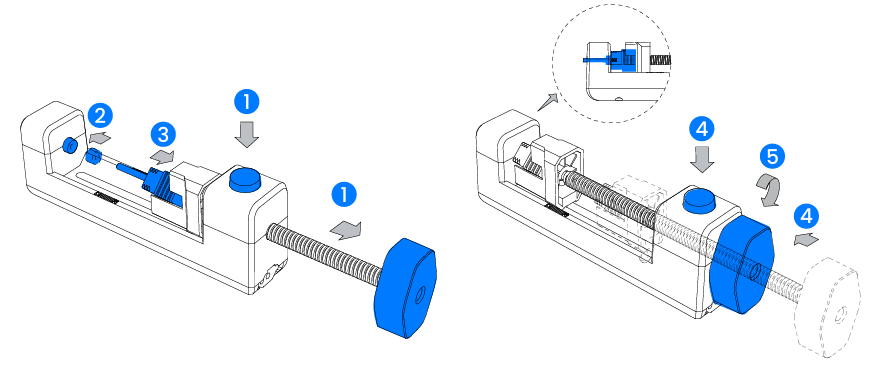
Installer le collet :
1. Appuyer sur le bouton à ressort et tirer le poussoir jusqu’à sa position la plus extérieure.
2. Placer le collet dans la douille avant.
3. Positionner la fraise (avec son capuchon) sur le poussoir.
4. Pousser vers l’avant pour aligner la fraise avec le collet.
5. Tourner la molette à vis pour enfoncer la fraise dans le collet (la longueur exposée par défaut est d’environ 12 mm ; ajuster si nécessaire).
Retirer le collet :
1. Appuyer sur le bouton à ressort et tirer le poussoir vers l’extérieur
2. Insérer la goupille de retrait par le dessous dans le poussoir
3. Placer la fraise et son collet dans la douille avant
4. Pousser vers l’avant pour aligner la goupille avec la fraise
5. Tourner la molette à vis pour éjecter le collet
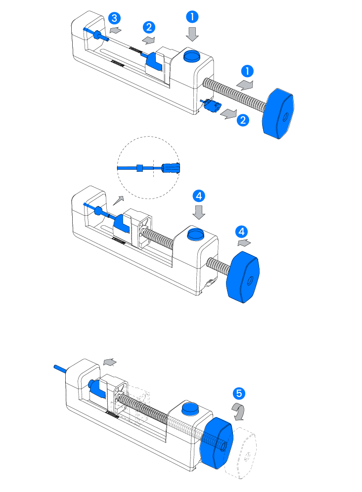
Remarque : pendant l’installation, le poussoir traverse le capuchon de protection de la fraise. C’est normal.
Tige de palpage 3D
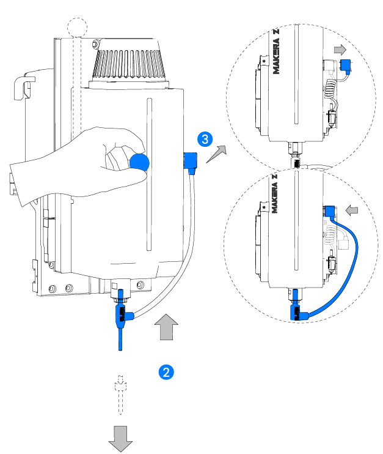
La tige de palpage 3D permet le palpage automatique des axes X, Y et Z sur les matériaux conducteurs. Elle convient aux formes régulières (comme les pièces carrées ou rondes) pour rechercher les bords ou le centre dans des montages personnalisés tels que des étaux.
Étapes d'utilisation :
1. Suivez les instructions à l’écran pour passer à la tige de palpage 3D
2. Consultez la section « Changement d’outil » pour retirer l’outil actuel et installer la tige de palpage 3D
3. Déconnectez le palpeur filaire et branchez le câble de la tige de palpage 3D
4. Cliquez sur Continuer ou appuyez sur le bouton principal pour démarrer l’étalonnage automatique du palpeur
5. Suivez les indications du logiciel pour terminer le palpage 3D (voir wiki.makera.com pour plus de détails)
Note:
La tige de palpage 3D fonctionne uniquement avec des matériaux conducteurs. La pièce doit être reliée électriquement au plateau en aluminium par des broches de positionnement, des vis ou une autre méthode conductrice.
Indication d’état
Le voyant LED du capot de broche Makera Z1 (Z1 et Z1Pro) affiche l’état de la machine, notamment à l’arrêt, en fonctionnement et en alerte.
Il utilise également un éclairage segmenté pour indiquer le numéro de l’outil actif pendant les changements d’outil.
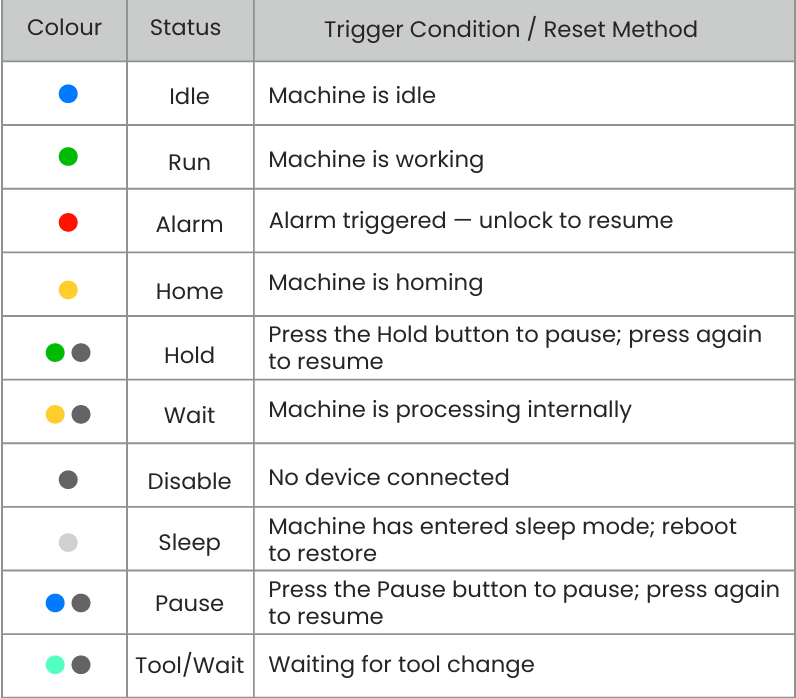
Configuration de la machine
Installer le logiciel
Scannez le code QR pour télécharger Makera Studio et l’application Makera. Concevez et générez des parcours d’outil sur votre ordinateur, puis commandez la machine depuis votre ordinateur ou votre appareil mobile.
https://www.makera.com/software
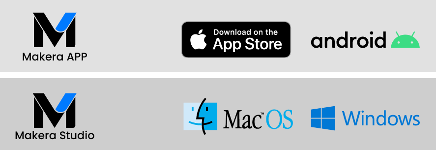
Mise sous tension
Branchez le câble d’alimentation et activez l’interrupteur. Makera Z1 (Z1 et Z1Pro) prendra automatiquement l’origine de tous les axes et le voyant d’éclairage restera bleu (au repos).
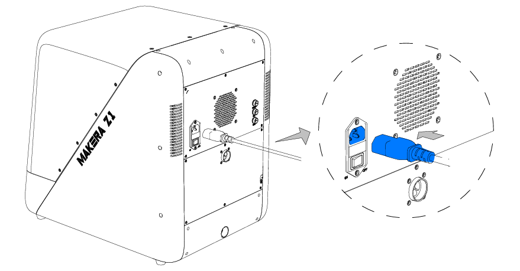
Configuration Wi-Fi et connexion de la machine
Configuration Wi-Fi
Vous pouvez vous connecter à la machine et la commander par USB, via le point d'accès Wi-Fi intégré (mode AP) ou via un réseau Wi-Fi local. Nous recommandons de connecter la machine à votre réseau Wi-Fi local.
Cela permet à votre ordinateur ou appareil mobile de rester connecté à Internet tout en commandant la machine à distance.
Configuration via Bluetooth
1. Activez le Bluetooth sur votre ordinateur ou appareil mobile.
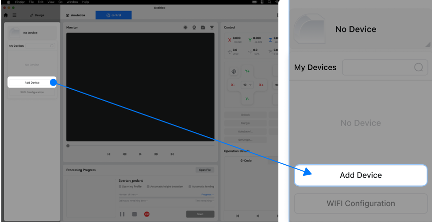
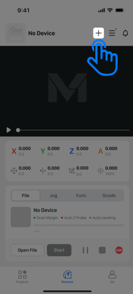
2. Ouvrez l'onglet « Control » dans Makera Studio (ordinateur), ou la page « Device » dans Makera App (mobile), puis appuyez sur Add Device.
3. Sélectionnez « Setup via Bluetooth », puis choisissez votre machine Makera Z1 dans la liste.
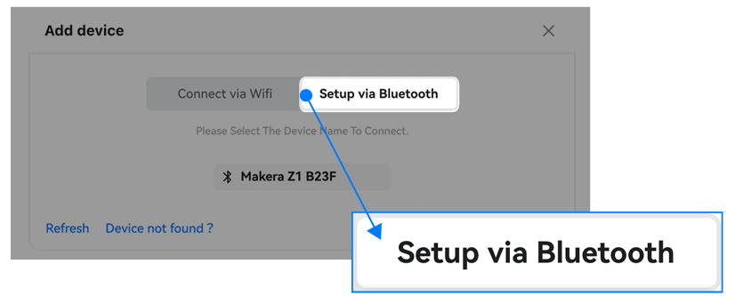
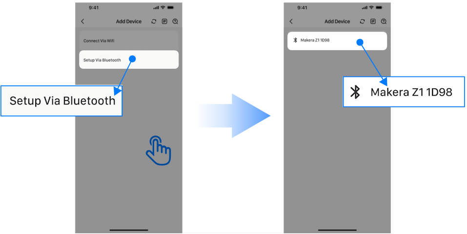
4. Sélectionnez le réseau Wi-Fi auquel vous souhaitez vous connecter, saisissez le mot de passe et confirmez.
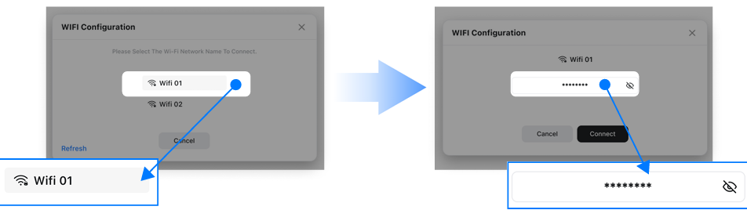
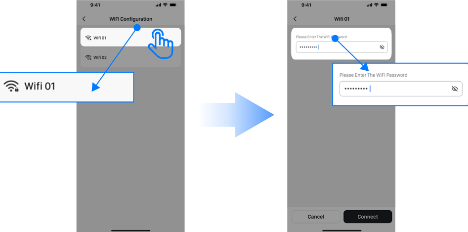
5. Une fois la configuration terminée, Makera Studio ou l'application se connectera automatiquement à la machine et l'ajoutera à la liste My Devices.
Note:
Après la connexion à la machine, vous pouvez à tout moment ajouter ou mettre à jour ses réglages Wi-Fi.
Pour obtenir des instructions détaillées sur le logiciel, consultez wiki.makera.com.
Connexion de la machine
Vous pouvez connecter la machine de trois façons :
• Avec un câble USB • En vous connectant au point d'accès Wi-Fi intégré de la machine (préfixe SSID : Makera Z1)
• En connectant votre appareil et la machine au même réseau Wi-Fi local
Étapes de connexion
1. Ouvrez l'onglet Control dans Makera Studio, ou la page Device dans Makera App. Si l'appareil a déjà été ajouté ou s'il est connecté par USB, vous pouvez vous connecter directement depuis la liste des appareils.
2. Si l'appareil n'a pas encore été ajouté, appuyez sur « Add Device ».
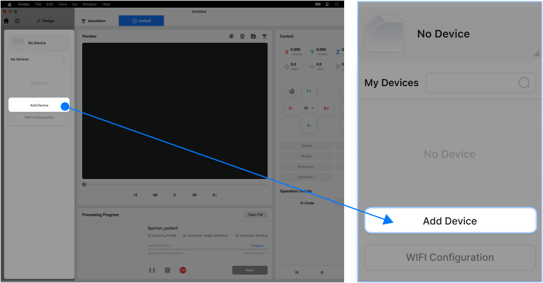
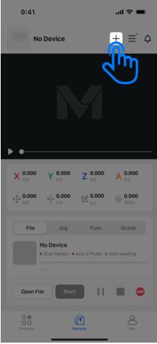
3. Sélectionnez « Connect via Wi-Fi », puis choisissez votre appareil Makera Z1 dans la liste.
4. Une fois connecté, Makera Studio ou l'application se connectera automatiquement à la machine et l'ajoutera à la liste Devices.
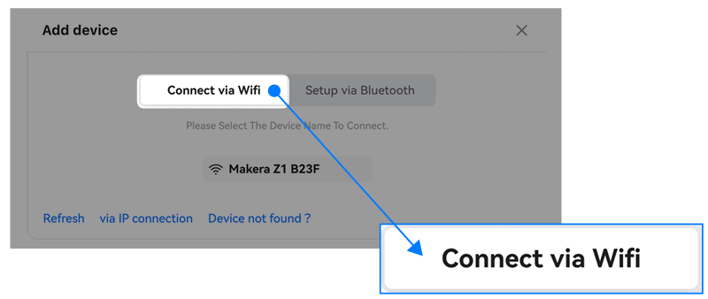
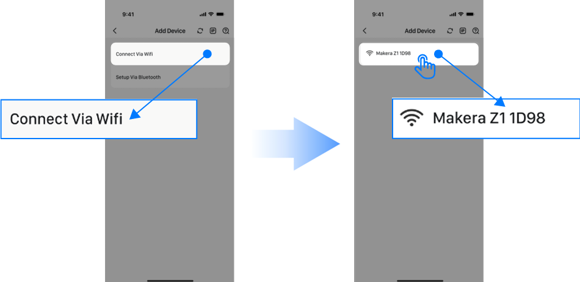
Note:
Pour obtenir des instructions détaillées sur le logiciel, consultez wiki.makera.com.
Votre premier projet
Votre Makera Z1 est prête à fonctionner ! Commençons votre premier projet d'usinage.
Un parcours d'outil pour la bride supérieure en aluminium est préchargé sur la machine. Cet exemple vous guidera dans le flux de travail de base de la Z1.
1. Fixer le matériau : utilisez quatre vis M5×20 et deux brides supérieures pour fixer fermement la plaque d'aluminium fournie de 100 × 100 × 5 mm à l'emplacement indiqué.
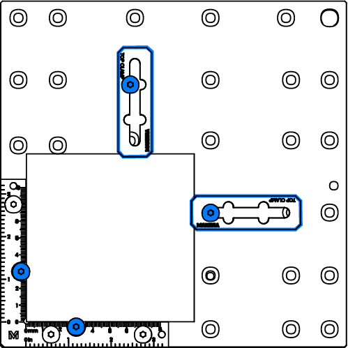
2. Ouvrir le projet : ouvrez Makera Studio ou Makera App et connectez-vous à votre Z1. Accédez à File Storage et sélectionnez : Examples → TopClamp.nc
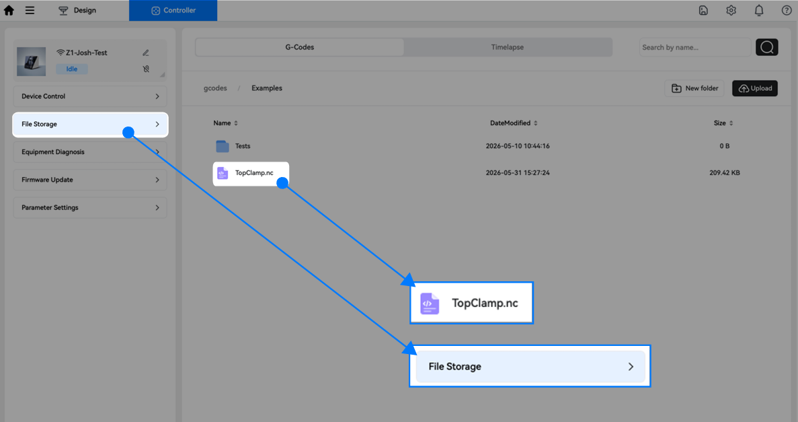
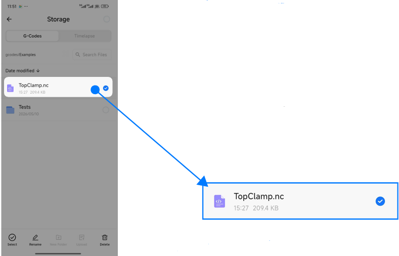
Si vous ne trouvez pas le fichier, téléchargez d'abord le fichier NC, puis téléversez-le ici sur votre machine : TopClamp.nc
3. Démarrer la tâche :
- Cliquez sur « Start »
- Activez « Auto Vacuum » pour démarrer automatiquement le Makera Dust Collector ou le Dust Collector Lite.
- Activez « Auto Blow » pour activer le soufflage d'air de la broche.
- Activez « Auto Bed Clean » pour nettoyer automatiquement la zone de travail après l'usinage.
- Définissez l'origine de travail par rapport à l'Anchor 1, avec X Offset = 0 et Y Offset = 0.
- Activez « Scan Margin » pour vérifier la zone d'usinage et détecter d'éventuelles interférences.
- Activez « Auto Leveling » et définissez : X Probe Points : 3, Y Probe Points : 3, Probe Height : 2 mm.
- Cliquez sur « Run »
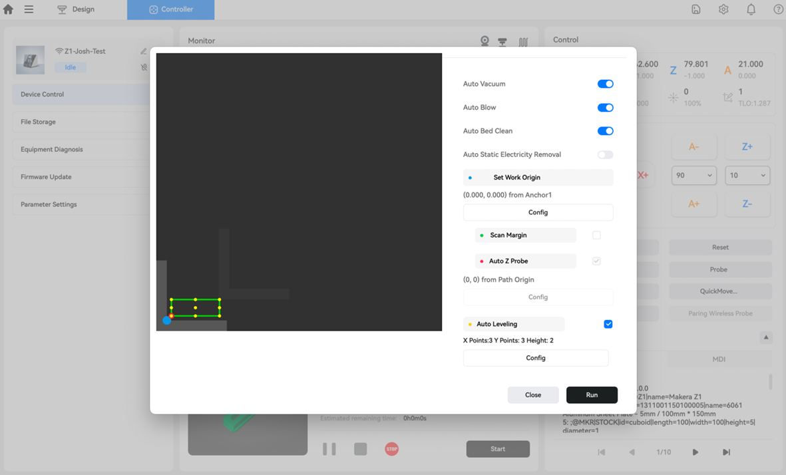
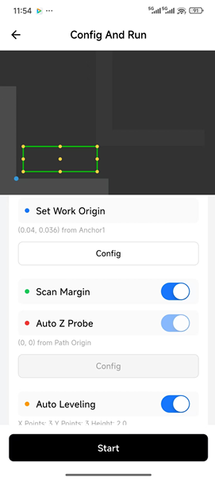
4. Changement rapide d'outil : lorsque le logiciel vous y invite, installez la sonde filaire ou l'outil requis, puis cliquez sur Confirm dans le logiciel ou appuyez sur le bouton avant de la machine pour continuer. Ce projet utilise l'outil n°1 — fraise hélicoïdale à une dent pour métal de 3.175 × 12 mm.
5. Post-traitement : après l'usinage, utilisez le tournevis multifonction fourni pour retirer les attaches et lisser les bords avec la lime. Félicitations ! Votre premier projet pratique de bricolage est terminé.
Scannez le code QR ci-dessous ou rendez-vous sur
makerables.com/OfficialTutorials
Découvrez d'autres projets officiels et suivez les instructions pour créer le vôtre.
Étapes suivantes
Pour obtenir des instructions détaillées sur l'utilisation, le logiciel, la maintenance et le dépannage, consultez notre Wiki officiel et sélectionnez Makera Z1（Z1&Z1 Pro）.
La dernière version de ce guide est disponible sur notre site web. Si vous rencontrez un problème, n'hésitez pas à nous contacter.
Vous pouvez acheter les accessoires, outils et matériaux nécessaires dans notre boutique officielle.
Rejoignez notre communauté pour échanger des idées, partager vos projets et vous inspirer des réalisations d'autres personnes dans le monde.